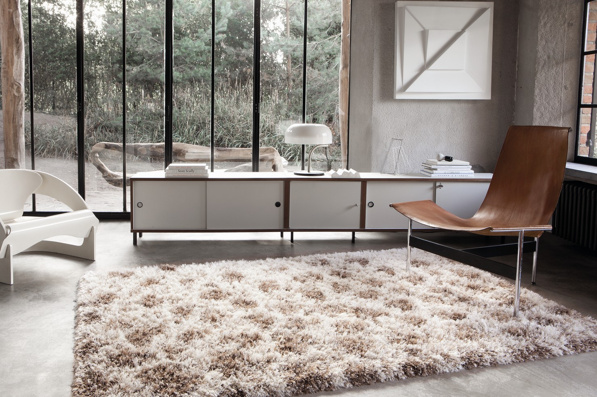
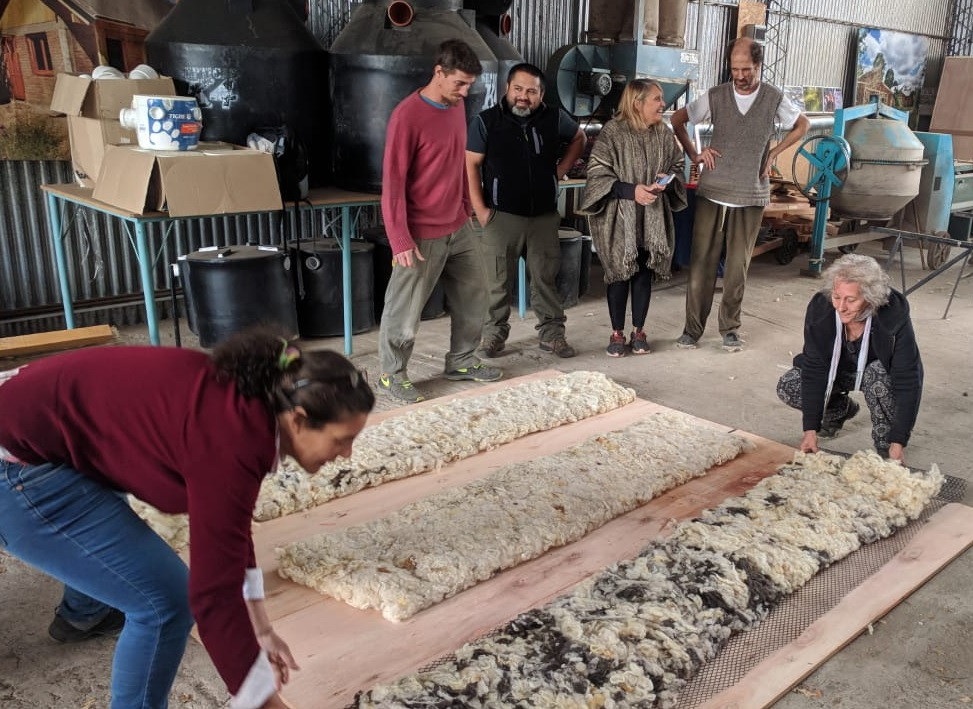

Se ha utilizado durante miles de años para una amplia gama de cosas. Esencialmente una fibra del pelo de ovejas, yaks y cabras, es un textil increíblemente versátil con una sorprendente cantidad de usos. La ropa como suéteres, sombreros y abrigos es muy valorada, especialmente cuando está hecha de un material más lujoso. La increíblemente suave, como la Merino, se usa en la producción de ropa; mientras que la de fibra áspera y gruesa se utiliza como fantástico material aislante y relleno. La mayoría de los usos tienen orígenes antiguos; Sin embargo, se encuentra en un proceso constante de evolución en la recolección, desarrollo y aplicación. Es codiciada tanto por su propósito decorativo como funcional, tiene muchos atributos positivos, incluida su durabilidad, flexibilidad y resistencia al agua. Cuando se usa en la producción de ropa, puede ser tejida, tejida a ganchillo o fieltrada. Se usa comúnmente en suéteres, sombreros, pantalones, abrigos, bufandas, guantes y ropa deportiva. Mezclada con otras fibras naturales o sintéticas, agrega resistencia a las arrugas de los productos. También se emplea en prendas de vestir para animales, incluidas almohadillas y mantas para caballos, camellos y perros. Los abrigos y mantas para perros y caballos están hechos de lana para proporcionar calor adicional y una capa natural de aislamiento durante los meses más fríos del año. La lana merina se ha utilizado en productos para bebés, como mantas envueltas para bebés y sacos de dormir para bebés.
Otros usos de la lana
Alejándose de la producción de prendas de vestir, también se utiliza de muchas maneras en la casa. Se puede ver a menudo utilizada en mantas, alfombras y cortinas. Muchos tipos de muebles están rellenos de esta fibra. Incluso se utiliza para aislar las habitaciones.
- Alfombras de lana
Las alfombras de lana son notablemente resistentes y producen colores vibrantes. Las alfombras de lana de hoy son antiestáticas y absorben el ruido. El relleno de alfombras se usa para agregar altura y aislamiento a las alfombras. La resistencia inherente a las llamas y al calor lo convierte en uno de los textiles para el hogar más seguros.

- Usos industriales y agricolas
Los usos industriales incluyen láminas de lana gruesa unida que se utilizan para el aislamiento térmico y acústico en la construcción de viviendas, así como almohadillas para absorber los derrames de petróleo. También se utiliza para absorber olores y ruidos en maquinaria pesada y altavoces estéreo. Como proteína animal, es un fertilizante eficaz del suelo, que actúa como una fuente de nitrógeno de liberación lenta y aminoácidos preparados.
